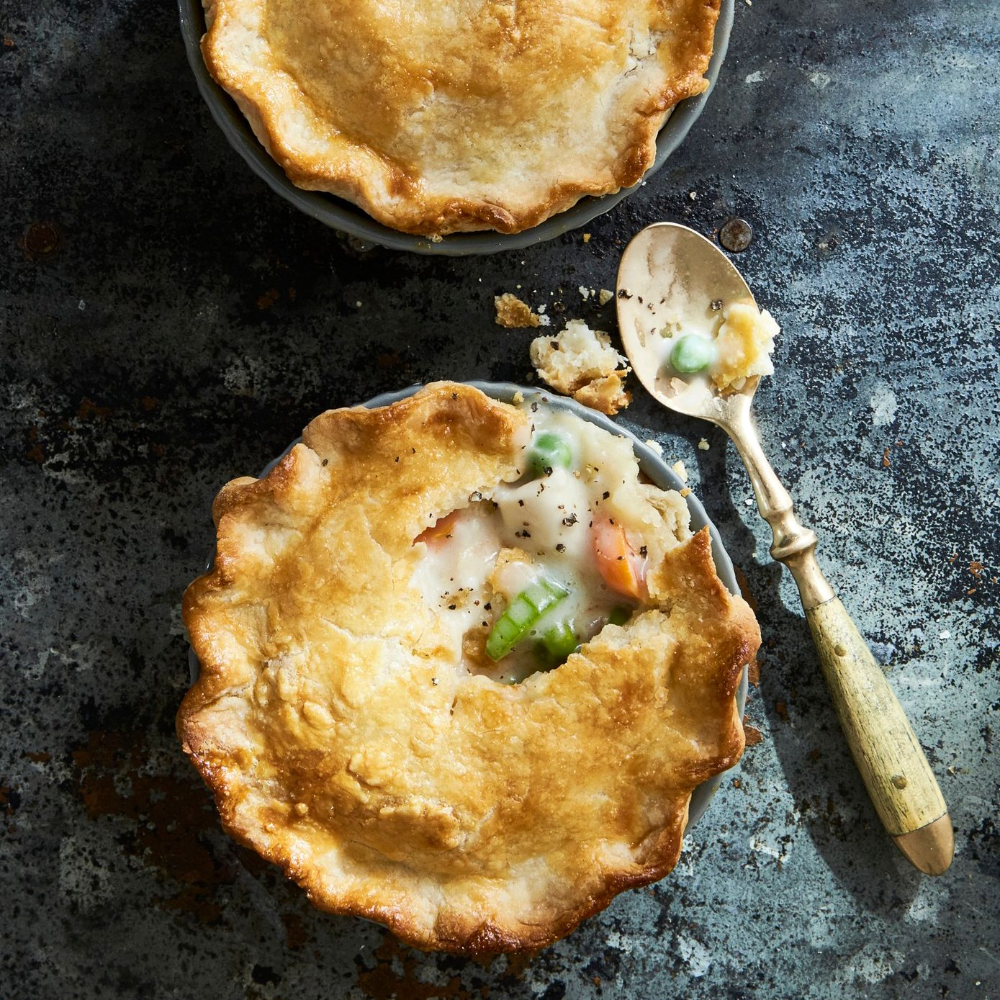

Chicken Pot Pie

Description
Every home cook needs a good chicken pot pie recipe in their repertoire. On the hunt for a new family
favorite? You're
in luck! This homemade chicken pot pie definitely deserves a permanent spot in your recipe box.
Ingredients
- 1 Pound skinless, bonless chicken breast halves, cubed
- 3 Cup sliced carrots
- 1 Cup frozen green peas
- 1/2 Cup sliced celery
- 1/3 Cup butter
- 1/3 Cup chopped onion
- 1/3 Cup all purpose flour
- 1/2 Teaspoon salt
- 1/4 Teaspoon black pepper
- 1/4 Teaspoon celery seed
- 1 3/4 Cups chicken broth
- 2/3 Cup milk
- 2 (9 inch) unbaked pie crusts
Steps
- Preheat oven to 425 Degrees
- Combine carrots, peas, chicken, and celery in a saucepan; add water to cover and bring to a boil. Boil
for 15 minutes, then remove from the heat and drain.
- While the chicken is cooking, melt butter in another saucepan over medium heat. Add onion and cook until
soft and translucent, 5 to 7 minutes. Stir in flour, salt, pepper, and celery seed. Slowly stir in
chicken broth and milk. Reduce heat to medium-low and simmer until thick, 5 to 10 minutes. Remove from
heat and set aside.
- Place chicken and vegetables in the bottom pie crust. Pour hot liquid mixture over top. Cover with top
crust, seal the edges, and cut away any excess dough. Make several small slits in the top crust to allow
steam to escape.
- Bake in the preheated oven until pastry is golden brown and filling is bubbly, 30 to 35 minutes. Cool
for 10 minutes before serving.
Back to Home